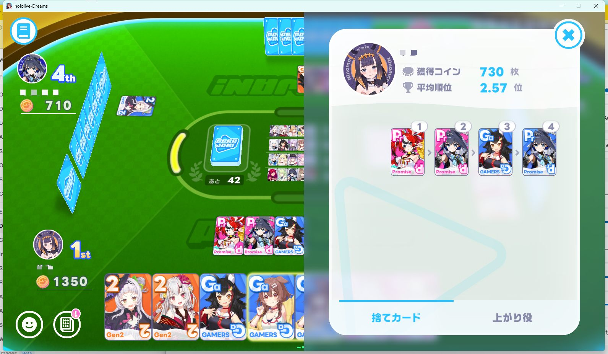
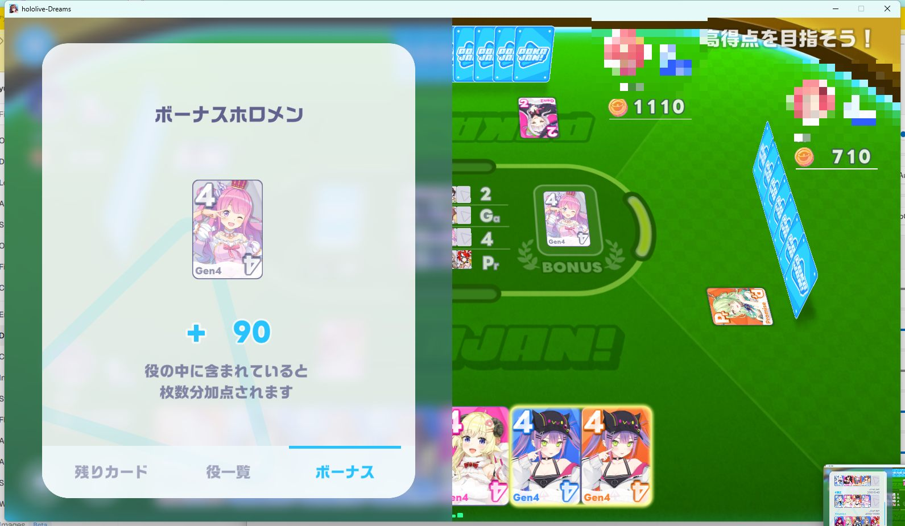

Pokajan yaku split broadly into two families: "collect 3 of the same Holomen" and "collect a matching generation (group)." The same-color bonus and bonus Holomen add-on then combine with these to decide your final score.
A simple yaku formed by collecting 3 cards of the same Holomen. It's the easiest to complete and appears most often, making it your go-to when you want a quick win.
Collect one card each from every Holomen in the same generation or unit. The score changes depending on group size — 3, 4, or 5 members — with bigger groups paying out more but being harder to complete.
The base score for each yaku type, along with the score when the "same-color bonus" (explained below) applies.
| Yaku | Requirement | Normal | Same Color |
|---|---|---|---|
| 3-of-a-Kind | 3 of the same Holomen | 120 Pt | 840 Pt |
| 3-Member Unit | One each from a 3-member group | 180 Pt | 480 Pt |
| 4-Member Unit | One each from a 4-member group | 300 Pt | 840 Pt |
| 5-Member Unit | One each from a 5-member group | 480 Pt | 1,800 Pt |

Every card has a "background color" assigned to it. If every card in your completed yaku shares the same background color, you get a much higher score than normal when you declare Pokajan.
Same-color is your comeback card: as the table above shows, a 3-of-a-kind jumps from 120 to 840 points — roughly a 7x multiplier. The odds of it happening are low (some analyses put it around 6%), but its contribution to your overall score is disproportionately high, making it worth pushing for once you're in reach.
A "bonus Holomen" is designated at the start of each round. If your completed yaku includes that Holomen's card, you get bonus points on top of the normal score.
+90 Pt per bonus Holomen card included in your yaku. For example, if a 3-of-a-kind includes one bonus Holomen card, you get 120 Pt + 90 Pt = 210 Pt (and even more if multiple bonus cards are included).
Bonus Holomen cards tend to be popular targets for other players too. If one lands in your hand, hold onto it, and it's worth keeping an eye out for it from the early game.

Once you understand the scoring, learn how to actually play it out on the Strategy & Safe Tiles page.
💬 Comments
Spotted an error in the scoring, or found another yaku? Let us know.